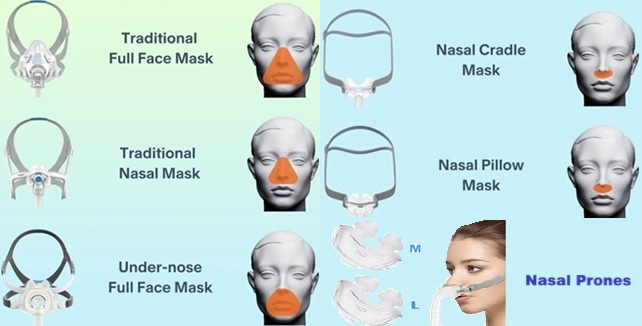
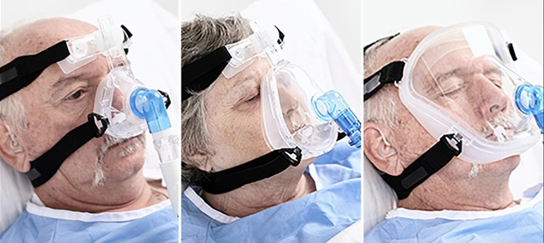

Choosing the Right CPAP/BiPAP Mask
Comfort, fit, and safety for effective positive pressure therapy
PURPOSE OF MASKS
- Deliver positive pressure into the lungs
- Used with CPAP and BiPAP machines
- Help keep airways open during sleep or respiratory distress
- Improve oxygenation and ventilation
- Reduce shortness of breath and nighttime awakenings
WHY THE RIGHT MASK MATTERS
- Proper seal ensures effective therapy
- Prevents air leaks
- Improves comfort and tolerance
- Allows longer and more consistent use
- Directly impacts treatment success
TYPES OF MASKS
- Total Face Mask: Covers entire face (forehead to chin)
- Full Face Mask: Covers nose and mouth
- Nasal Mask: Covers only the nose
- Nasal Pillows (Prongs): Insert slightly into nostrils
- Under-Nose Mask: Sits under nose, covers mouth
- Cradle Mask: Rests under the nose without entering nostrils
CHOOSING THE RIGHT TYPE
- Claustrophobic patients may prefer nasal or under-nose masks
- Mouth breathers may benefit from full face masks
- Sensitive skin → softer, minimal-contact masks
- Comfort is key for long-term use
FIT & COMFORT
- Mask should create a soft but effective seal
- Modern masks use soft silicone or gel materials
- Should not be overly tight
- Avoid pressure points on the bridge of the nose
- Skin protection may be needed for long use
COMMON ISSUES
- Skin irritation or breakdown (especially nasal bridge)
- Air leaks causing noise or discomfort
- Dryness or pressure marks
- Difficulty tolerating full-face coverage
MONITORING
- Use pulse oximeter when needed
- Monitor breathing and comfort
- Alarms recommended in hospital settings
⚠️ CONTRAINDICATIONS & SAFETY
- Vomiting or high risk of vomiting (aspiration risk)
- Not fully alert or unable to remove mask independently
- Excessive food intake before use (abdominal pressure)
- Severe claustrophobia (consider alternative masks)
- Facial trauma or open wounds
IMPORTANT SAFETY POINTS
- Remove mask immediately if vomiting occurs
- Never leave high-risk patients unattended
- Ensure proper strap fit—not too tight
- Use softer masks for long-term therapy when possible
- Check skin regularly for pressure injury
- Ensure patient can communicate distress
KEY TAKEAWAY
- The right mask can make or break therapy success
- Comfort = longer use = better outcomes
- Safety must always come first

